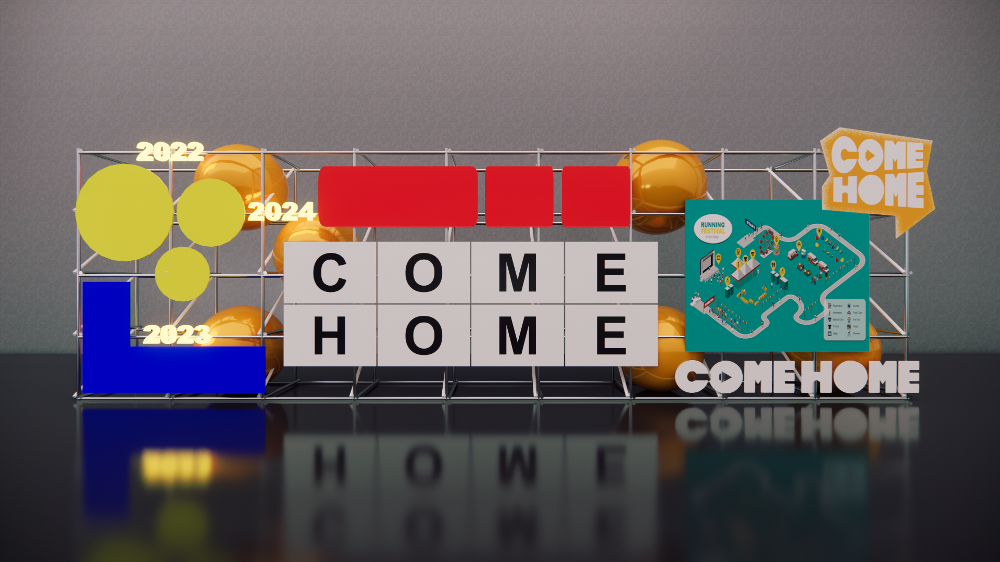
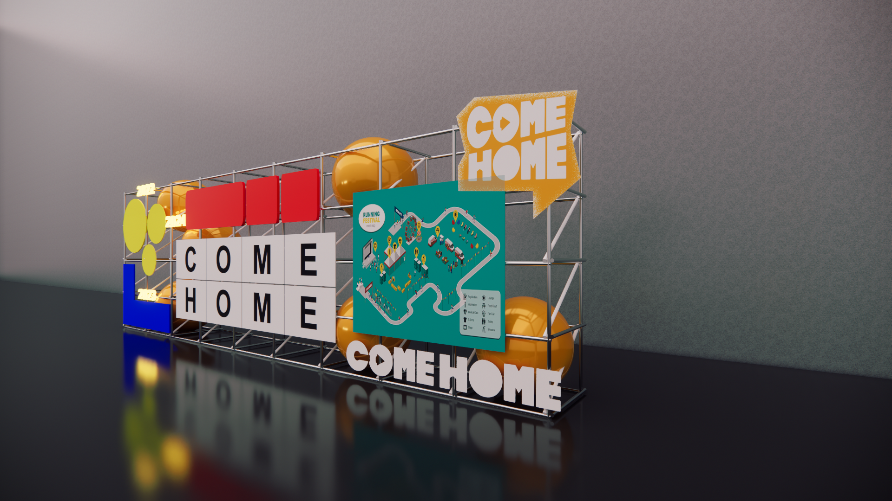
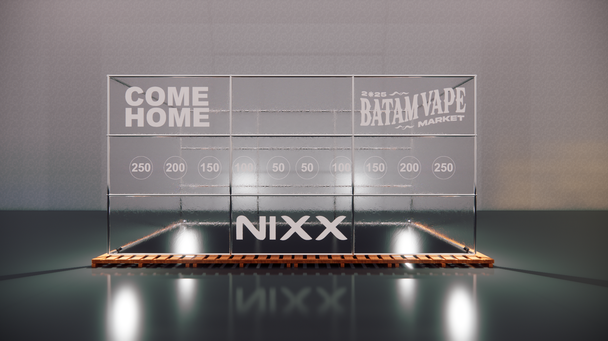
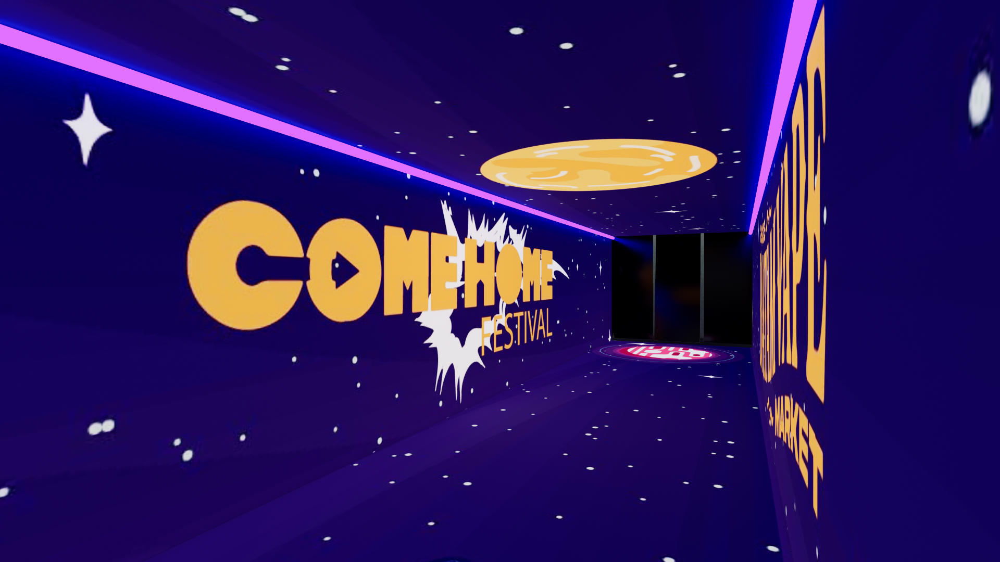
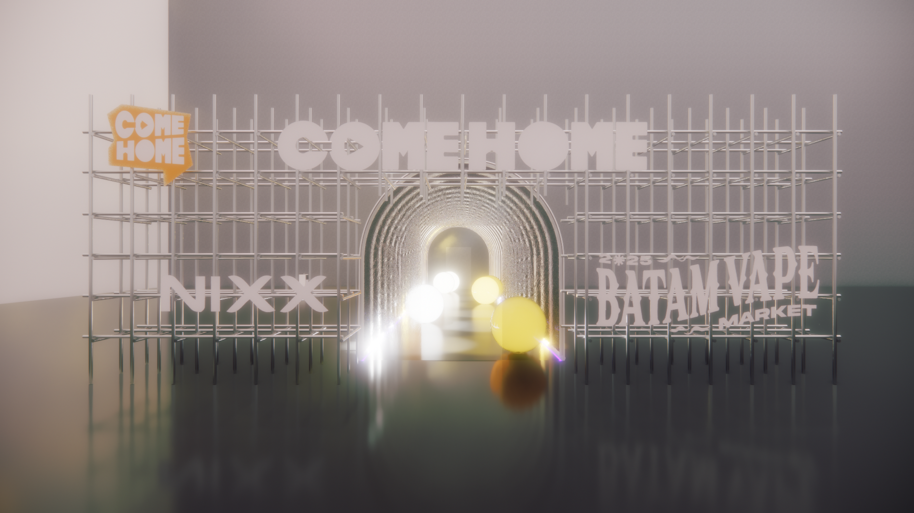

Designed as a collection of immersive installations for Come Home Festival, this project focuses on creating engaging visitor experiences through interactive landmarks and event structures.
The scope included the design of immersive photo booths, festival gateways, iconic landmarks, and the Cloud Competition area. Each element was developed to enhance brand visibility, encourage audience interaction, and contribute to a memorable festival atmosphere.